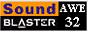
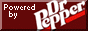

Tramway SDK 0.1.0
Github
Quick links
Home
Get Started
Models
Currently we have three types of 3D models.
All model types are stored in the /data/models/ directory.
Static models have the extension .stmdl, dynamic models have
the .dymdl extension and modifcation models have the
.mdmdl extension.
Static models
Static models not only have normal texture coordinates, but they also have lightmap coordinates. They can be lightmapped. That's pretty nice.
Dynamic models
Dynamic models also have texture coordinates, but no lightmap coordinates. Instead they have bone weights, which allow them to use pose matrices and be animated by animations and stuff.
Modification models
Unlike other model types, this model type has no vertex data of its own. Instead it references the vertex data of some other model. What is unique to it, is its material to material mapping. It can be used to swap out a material.
For example, if you have a pink teapot model which uses a material named
pink-pot and you would like a cyan teapot model, instead of
re-exporting another dynamic model but with just the materials replaced,
you could create a modification model with the material mapping of
pink-pot => cyan-pot.




